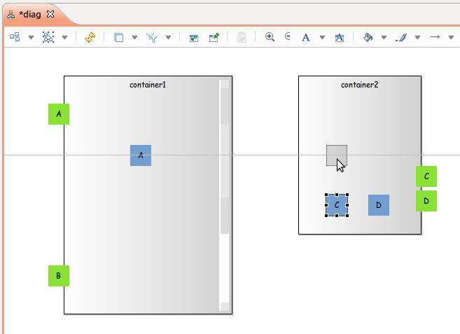
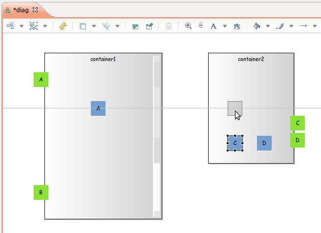

Summary: Add capability to snap to all shapes when moving or resizing a node or a container.
| Version | Status | Date | Authors | Changes |
|---|---|---|---|---|
| v0.1 | DRAFT | 2015-04-08 | lredor | Initial version. |
| v0.2 | PROPOSAL | 2015-04-08 | lredor | Reviewed version. |
Relevant tickets:
There is currently the capability to snap to shape during moving or resizing a node. This capability is inherited from GMF framework. To enable it, select the diagram and in the Properties view, in Rulers & Grid tab, check the checkbox Snap To Shapes. As explained in GMF doc, However, edit parts can only snap to other edit parts that share the same parent.
The goal of this feature is to enable on demand the snap to all shapes and not only with the same container.
This new behavior will be available only if Snap To Shapes is already enabled. To add this new behavior, the user should press a specific shortcut.
Shift, Ctrl and Alt is already used by other GMF behaviors during resize/move. So we must use function key as shortcut. The chosen function key is F4 (not used by other functions on diagram as F5 for refresh for example).
For information the other shortcuts used during resize by GMF or other Sirius features are:
For information the other shortcuts used during move by GMF are:
The Snap To Shapes, uses all the shapes that share the same parent, even if they are not visible.
In contrast, when the user press F4 function key, all visible shapes are used.
As for Snap To Shapes, this feature is available on:
If a container is resized, or moved, it will not be snapped to their children.
Some screenshots of this new feature are shown below.

The Snap To Shapes feature is not operational when moving or resizing a border node. It will be the same for this new feature. However, all nodes can be snapped to existing border nodes.
This evolution does not change any API.
No user interface change.
This new behavior should be added in the New and Noteworthy documentation.
A note should also be added in the user doc to explain this new feature (and possibly for the existing move shortcuts):
Add new tests that resize elements and move elements. The data from test org.eclipse.sirius.tests.swtbot.PortsOnNodePositionStabilityTest can be used as it uses both nodes, border nodes and container nodes.
Points to consider during tests:
Warning: These tests need to update the SWTBot framework or at least add new methods in our part to drag a node with a shortcut key pressed.
Excluded shortcuts:
Excluded behaviors: